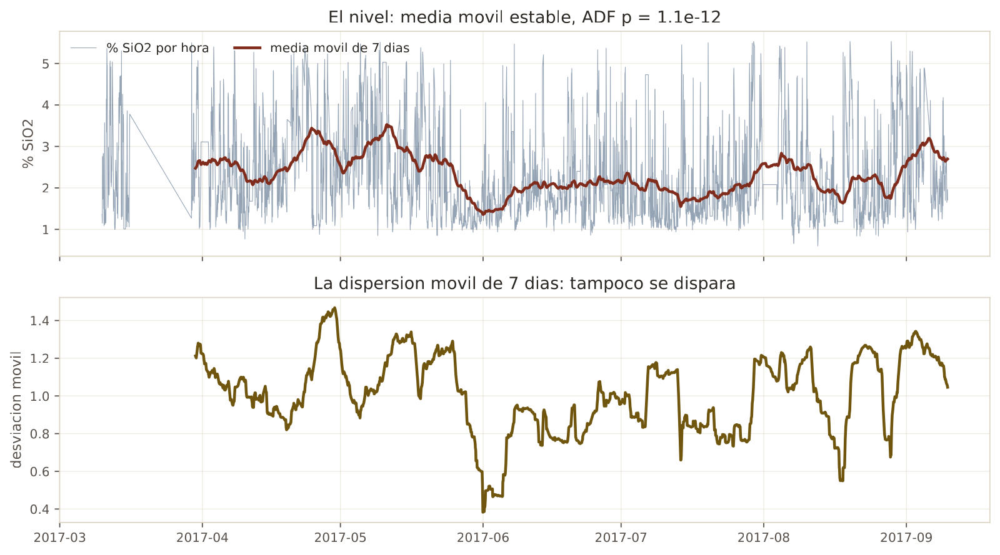
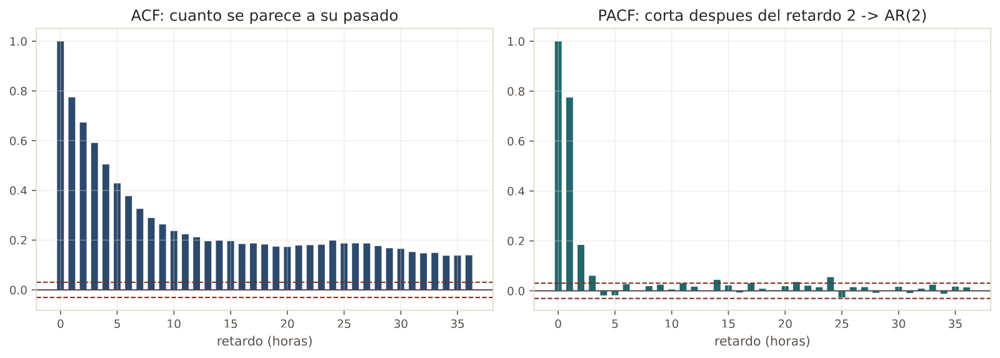
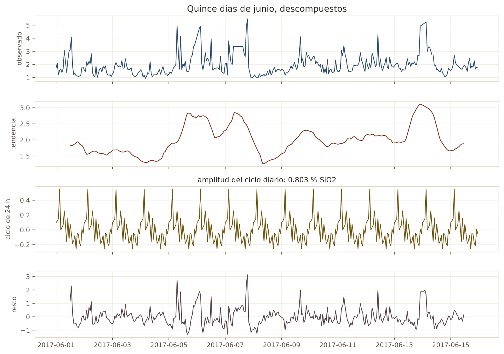
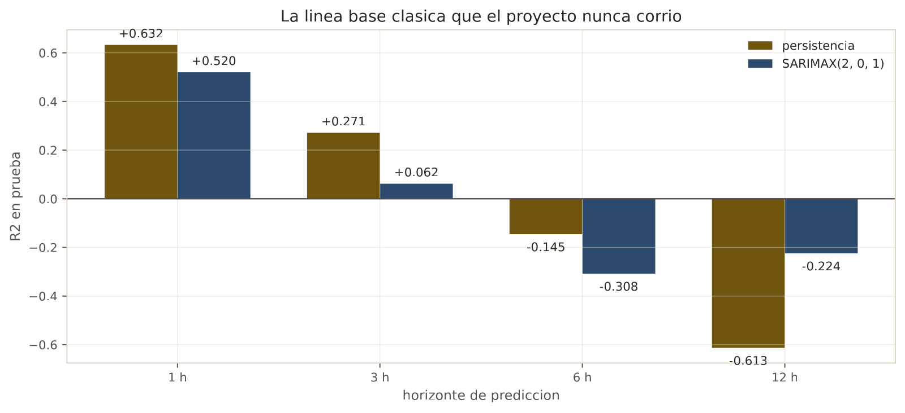

En 30 segundos
- 0,52 vs 0,63. SARIMAX contra la persistencia a una hora. La línea base clásica también pierde.
- La serie ya era estacionaria. Dickey-Fuller da p de 1,1 por 10 elevado a −12, así que no hacía falta diferenciar. Nadie lo había comprobado.
- La PACF corta en el retardo 2. De ahí sale el orden del modelo, con datos y no por defecto.
- SARIMAX gana solo a 12 horas, con −0,224 contra −0,613. Gana en territorio negativo, que no sirve.
- Recursivo le gana a directo en horizonte largo, −0,359 contra −0,798. Y es contraintuitivo.
Qué resuelve este módulo
El proyecto aplicó nueve módulos de machine learning a una serie de tiempo sin correr nunca los controles que un ingeniero de pronóstico corre primero.
Nadie comprobó si la serie era estacionaria. Nadie miró su autocorrelación. Y sobre todo, nadie puso en la tabla la línea base clásica, que es SARIMAX. Sin ella, la frase "el machine learning no aporta" estaba comparándose contra un competidor menos.
Este módulo pone esos controles y ese competidor.
Antes de la teoría: un ejemplo de juguete
Dos series de seis horas. Las dos suben, pero por motivos distintos.
| Hora | 1 | 2 | 3 | 4 | 5 | 6 |
|---|---|---|---|---|---|---|
| Serie A | 2 | 4 | 2 | 4 | 2 | 4 |
| Serie B | 2 | 4 | 6 | 8 | 10 | 12 |
Paso 1. La media de cada mitad
Se parten en dos mitades y se calcula la media de cada una.
Serie A: primera mitad (2, 4, 2) -> 8/3 = 2,67 segunda (4, 2, 4) -> 10/3 = 3,33
Serie B: primera mitad (2, 4, 6) -> 12/3 = 4 segunda (8, 10, 12) -> 30/3 = 10En A las dos medias casi coinciden. En B se duplican y media. Esa es la diferencia entre una serie que vuelve a su sitio y una que se va.
Paso 2. Qué significa ser estacionaria
Una serie es estacionaria cuando su media y su dispersión no cambian con el tiempo. La A lo es: oscila alrededor de 3 y vuelve siempre. La B no: cada hora está más arriba que la anterior.
Esto no es un tecnicismo. Casi todos los modelos clásicos de pronóstico suponen estacionariedad, y aplicarlos a una serie que se va da resultados sin sentido.
Paso 3. Diferenciar, que es la cura
Diferenciar es quedarse con el cambio en vez del nivel.
Serie B: 2 4 6 8 10 12
cambio de B: 2 2 2 2 2El cambio de B es constante. Una serie que se iba se ha convertido en una que no se mueve. Eso es la d del ARIMA: cuántas veces hay que diferenciar.
Paso 4. Cómo se elige el orden
Dos herramientas, y se leen al revés una de otra.
La ACF mide cuánto se parece la serie a sí misma desplazada. La PACF hace lo mismo quitando el efecto de los retardos intermedios.
si la PACF corta de golpe en el retardo p -> hay un AR(p)
si la ACF corta de golpe en el retardo q -> hay un MA(q)Paso 5. Qué acaba de pasar
Tres decisiones que en este proyecto se habían saltado: comprobar si hay que diferenciar, mirar la autocorrelación, y elegir el orden con esa información en vez de por defecto.
Y una cuarta que aparece luego: cómo pronosticar varias horas por delante. Hay dos formas y dan resultados distintos.
Glosario
12 términos, en palabras simples
- Estacionariedad. Que la media y la dispersión de la serie no cambien con el tiempo.
- Dickey-Fuller aumentado. La prueba estándar de estacionariedad. Un valor p pequeño dice que la serie sí es estacionaria.
- Diferenciar. Quedarse con el cambio entre valores consecutivos, en vez del nivel.
- ACF. Autocorrelación. Cuánto se parece la serie a sí misma desplazada N horas.
- PACF. Autocorrelación parcial. Lo mismo, quitando el efecto de los retardos intermedios.
- AR(p). Parte autorregresiva: el valor de ahora depende de los p valores anteriores.
- MA(q). Parte de media móvil: el valor de ahora depende de los q errores anteriores.
- ARIMA(p, d, q). La combinación, con
ddiferenciaciones. - SARIMAX. ARIMA con estacionalidad y con variables externas. La línea base clásica.
- Descomposición estacional. Partir la serie en tendencia, ciclo y resto.
- Multi-paso directo. Entrenar un modelo por horizonte, que salta la distancia entera.
- Multi-paso recursivo. Entrenar un modelo de un paso y aplicarlo varias veces, alimentándolo con sus propias predicciones.
Paso a paso
Paso 1. Preguntar si hay que diferenciar
Dickey-Fuller sobre el nivel y sobre el cambio. Si el nivel ya es estacionario, diferenciar sobra y además tira información.
Paso 2. Mirar la autocorrelación
ACF y PACF hasta 36 horas, para ver hasta dónde llega la memoria de la serie y dónde corta.
Paso 3. Elegir el orden con esos gráficos
El orden no se pone por defecto ni se busca a ciegas. Sale de dónde cortan las dos funciones.
Paso 4. Ajustar una vez y aplicar hacia adelante
El modelo se ajusta con los meses de entrenamiento. Después se aplica al periodo de prueba sin reajustar, alimentándolo con las observaciones nuevas según llegan. Es lo que haría una planta.
Paso 5. Comparar las dos formas de mirar lejos
Directo entrena un modelo por horizonte. Recursivo entrena uno de un paso y lo encadena. La diferencia importa y casi nadie la mide.
El código, por partes
Paso 1. La prueba de estacionariedad
from statsmodels.tsa.stattools import adfuller
estadistico, pvalor, *_ = adfuller(series.dropna(), autolag="AIC")
print(f"estadistico {estadistico:.2f} p {pvalor:.2e}")línea por línea, 4 entradas
adfuller(...)- La prueba de Dickey-Fuller aumentada. La hipótesis nula es que la serie NO es estacionaria.
autolag="AIC"- Deja que la prueba elija cuántos retardos usar, con un criterio de información.
estadistico, pvalor, *_- La función devuelve muchos valores. El asterisco recoge todos los demás y los descarta.
p menor que 0,05- Se rechaza la nula, así que la serie sí es estacionaria.
1. ESTACIONARIEDAD (Dickey-Fuller aumentado)
nivel estadistico -8.13 p 1.10e-12 -> estacionaria
cambio (primera diferencia) estadistico -17.12 p 7.22e-30 -> estacionariaEl nivel ya es estacionario. No hace falta diferenciar, así que la d del ARIMA vale cero.

Paso 2. ACF y PACF, para elegir el orden
from statsmodels.tsa.stattools import acf, pacf
print("ACF: ", acf(series.dropna(), nlags=36)[[1, 2, 3, 6, 12, 24]])
print("PACF:", pacf(series.dropna(), nlags=36)[[1, 2, 3, 6, 12, 24]])línea por línea, 2 entradas
nlags=36- Calcula hasta 36 horas de retardo, que es un día y medio.
[[1, 2, 3, 6, 12, 24]]- Selecciona varios elementos por su posición de una vez. Los dobles corchetes son la lista de posiciones.
2. AUTOCORRELACION
retardo: 1 2 3 6 12 24
ACF: 0.774 0.673 0.591 0.377 0.211 0.198
PACF: 0.775 0.184 0.060 0.026 0.017 0.055
La ACF decae despacio y la PACF corta de golpe después del retardo 2. Ese es el perfil de un proceso autorregresivo de orden 2. De ahí sale ARIMA(2, 0, 1).
Paso 3. Un ciclo diario que casi no existe

La descomposición separa un ciclo de 24 horas, y su amplitud es pequeña frente a la variación total. No hay turno ni ritmo diario que gobierne la sílice, lo cual descarta una hipótesis razonable antes de perder tiempo con ella.
Paso 4. SARIMAX contra la persistencia
from statsmodels.tsa.statespace.sarimax import SARIMAX
ajustado = SARIMAX(train, order=(2, 0, 1), trend="c").fit(disp=False)
aplicado = ajustado.apply(series, refit=False)
prediccion = aplicado.get_prediction(dynamic=False).predicted_mean.shift(lead - 1)línea por línea, 4 entradas
SARIMAX(train, order=(2, 0, 1))- Dos términos autorregresivos, cero diferenciaciones y uno de media móvil.
trend="c"- Añade una constante, porque la serie oscila alrededor de 2,33 y no de cero.
.apply(series, refit=False)- Extiende el modelo ya ajustado sobre toda la serie SIN reajustar. Los parámetros nunca ven el periodo de prueba.
.get_prediction(dynamic=False)- Predice cada instante usando las observaciones reales anteriores, que es como operaría en planta.
3. SARIMAX(2, 0, 1) CONTRA PERSISTENCIA
lead_h persistencia sarimax horas
1 +0.6323 +0.5199 959
3 +0.2712 +0.0620 957
6 -0.1453 -0.3081 954
12 -0.6129 -0.2244 948
Paso 5. Directo contra recursivo
directo = modelo().fit(train[features], serie.shift(-lead)[train.index])
un_paso = modelo().fit(train[features], serie.shift(-1)[train.index])
actual = test[features].copy()
for _ in range(lead):
prediccion = un_paso.predict(actual)
actual["sil_lag1"] = prediccionlínea por línea, 3 entradas
serie.shift(-lead)- El objetivo desplazado el horizonte entero. El modelo directo aprende a saltar de una vez.
for _ in range(lead)- El guion bajo como nombre significa que la variable del bucle no se usa. Solo interesa repetir.
actual["sil_lag1"] = prediccion- Aquí está la clave del recursivo: su propia predicción se convierte en la memoria de la vuelta siguiente.
4. MULTI-PASO: DIRECTO CONTRA RECURSIVO
3 h directo +0.1562 recursivo +0.1442
6 h directo -0.2197 recursivo -0.1149
12 h directo -0.7983 recursivo -0.3590El resultado, medido
Qué esperábamos. Que SARIMAX quedara cerca de la persistencia a una hora, porque un AR(2) con autocorrelación de 0,774 debería reproducirla casi.
Qué salió. Pierde en tres horizontes de cuatro.
| Horizonte | Persistencia | SARIMAX(2, 0, 1) | Diferencia |
|---|---|---|---|
| 1 hora | 0,632 | 0,520 | −0,112 |
| 3 horas | 0,271 | 0,062 | −0,209 |
| 6 horas | −0,145 | −0,308 | −0,163 |
| 12 horas | −0,613 | −0,224 | +0,389 |
Qué significa. La línea base clásica no rescata el proyecto. A una hora pierde por once centésimas, y a tres horas pierde por veintiuna.
El único horizonte donde gana es 12 horas, y ahí gana por debajo de cero. Un R² de −0,224 sigue siendo peor que decir la media, así que ganar esa comparación no da un modelo desplegable.
Por qué SARIMAX pierde ante algo tan simple
La respuesta está en la PACF. El retardo 1 vale 0,775 y el retardo 2 apenas 0,184.
Casi toda la información está en el valor anterior, que es exactamente lo que la persistencia usa y nada más. SARIMAX añade un segundo término autorregresivo y uno de media móvil, y esos términos suavizan la predicción. Suavizar ayuda cuando hay ruido y estorba cuando la señal es el último valor.
El hallazgo contraintuitivo del multi-paso
| Horizonte | Directo | Recursivo |
|---|---|---|
| 3 horas | +0,156 | +0,144 |
| 6 horas | −0,220 | −0,115 |
| 12 horas | −0,798 | −0,359 |
Lo que se enseña normalmente es que el recursivo acumula errores y por eso el directo aguanta mejor a horizonte largo. Aquí pasa lo contrario, y por partida doble a 12 horas.
La explicación conecta con el módulo 8. El modelo directo a 12 horas extrapola con convicción y se va lejos, igual que el −0,851 de aquel módulo. El recursivo, al realimentarse con sus propias predicciones, se va apagando hacia el promedio. Su cobardía lo salva.
Es un buen recordatorio de que las reglas generales de los libros son puntos de partida, no resultados.
Lo que este módulo deja abierto
Ya se ha probado todo lo que predice un número:
- árboles, bosques y boosting,
- rectas y regularización,
- redes densas y redes de secuencia,
- modelos clásicos de pronóstico.
Todos pierden contra repetir el último análisis, o ganan en negativo.
Queda una pregunta distinta. En vez de dar un número, dar un intervalo con cobertura garantizada. Puede que un modelo que sabe cuándo no sabe sí sea desplegable. El módulo 13 lo mide.
Ojo
- Comprobar la estacionariedad antes de diferenciar. Aquí la serie ya lo era, y diferenciar por costumbre habría tirado información.
- El orden sale de la ACF y la PACF, no de probar valores al azar ni de dejar el que viene por defecto.
- Un modelo clásico no es automáticamente un baseline débil. Aquí SARIMAX pierde, y eso hay que medirlo, no suponerlo en ninguna de las dos direcciones.
- Ganar en territorio negativo no es ganar. SARIMAX supera a la persistencia a 12 horas y sigue siendo peor que la media.
- El modelo se ajusta una vez, con el entrenamiento. Reajustarlo con datos de prueba mete información del futuro en los parámetros.
- Directo y recursivo pueden ordenarse al revés de lo que dice el manual. Aquí el recursivo gana a horizonte largo porque se apaga hacia el promedio.
Puente metalúrgico
La estacionariedad es la pregunta de si un circuito está en régimen o en transitorio. Un circuito en régimen oscila alrededor de una ley y vuelve. Uno en transitorio, después de un cambio de mineral, se desplaza y no vuelve. Casi todo el control estadístico de proceso supone régimen, igual que ARIMA supone estacionariedad.
La ACF es la curva de tiempo de residencia. Dice cuánto tiempo tarda el circuito en olvidar lo que le entró. Aquí, 0,774 a una hora y 0,211 a doce: la planta se acuerda de una hora atrás y casi nada de medio día.
Y el resultado del multi-paso tiene una lectura de operación muy directa. Un modelo que extrapola con convicción es peligroso, y uno que se vuelve prudente cuando pierde información es seguro. Es la diferencia entre un operador que sigue empujando una consigna sin datos frescos y uno que vuelve a valores conservadores mientras espera el análisis.
Repaso
La serie es estacionaria. ¿Por qué importa antes de modelar?
Porque decide si hay que diferenciar, y diferenciar cuando no hace falta tira información.
Los modelos clásicos de pronóstico suponen que la media y la dispersión de la serie no cambian con el tiempo. Si la serie se va, hay que quedarse con el cambio en vez del nivel. Aquí Dickey-Fuller da un p de 1,1 por 10 elevado a −12 sobre el nivel, así que la serie ya oscila alrededor de un valor estable y la d del ARIMA vale cero. Es una comprobación de dos líneas que el proyecto nunca hizo.
La PACF cae de 0,775 a 0,184. ¿Qué se decide con eso?
El orden autorregresivo del modelo. Una PACF que corta de golpe después del retardo p indica un proceso AR(p).
Aquí el primer retardo vale 0,775 y el segundo 0,184, y a partir del tercero los valores caen dentro del ruido. Eso apunta a AR(2), y de ahí sale el ARIMA(2, 0, 1) que se ajusta. La ventaja de elegirlo así es que la decisión queda justificada por los datos y se puede defender, en vez de salir de una búsqueda automática sobre decenas de combinaciones.
SARIMAX pierde contra repetir el último valor. ¿Cómo se explica eso?
Con la misma PACF. Casi toda la información está en el retardo 1, con 0,775, y el resto aporta poco.
La persistencia usa ese retardo y nada más. SARIMAX añade un segundo término autorregresivo y uno de media móvil, que suavizan la predicción combinando varios valores pasados. Suavizar es lo correcto cuando el ruido domina, y es un estorbo cuando la señal está concentrada en el último dato. El resultado es 0,520 contra 0,632 a una hora.
SARIMAX gana a 12 horas. ¿Se puede usar eso?
No, y la razón es importante para no engañarse con una tabla.
A 12 horas SARIMAX da −0,224 y la persistencia −0,613, así que la diferencia es de casi cuatro décimas a favor del modelo. Pero los dos están por debajo de cero, y cero es predecir siempre la media. Un modelo por debajo de la media no se despliega, por mucho que gane a otro todavía peor. Es la misma trampa que el módulo 8 señala cuando la persistencia se vuelve negativa.
El recursivo le gana al directo a 12 horas. ¿No debería ser al revés?
Suele serlo, y aquí no lo es por una razón concreta.
La regla del manual dice que el recursivo acumula sus propios errores al realimentarse, así que se degrada más rápido. Lo que ocurre en estos datos es que al realimentarse con predicciones cada vez más suaves, la memoria del modelo se aplana y sus salidas se acercan al promedio. Eso lo protege. El directo, en cambio, aprende a saltar 12 horas de una vez y lo hace con convicción, extrapolando lejos en la dirección equivocada. Da −0,798 frente a −0,359. Cuando la información se agota, apagarse hacia el promedio es mejor estrategia que apostar.